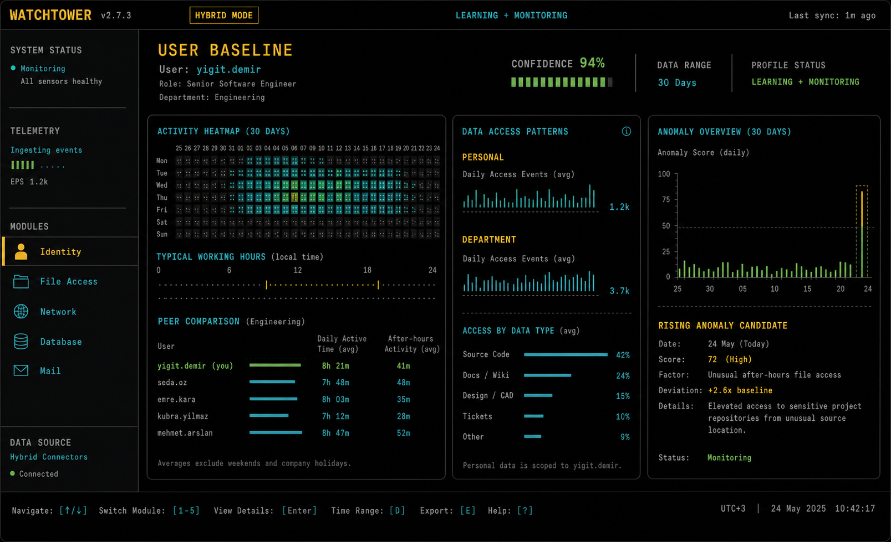
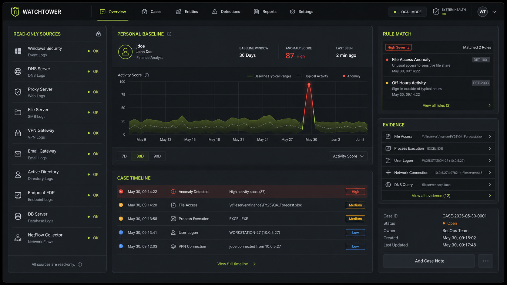
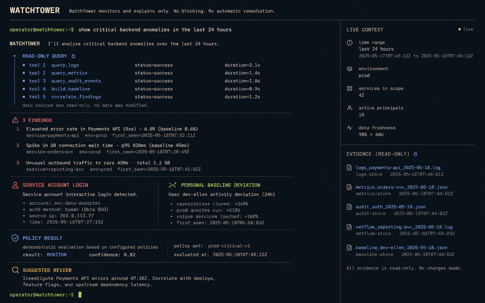
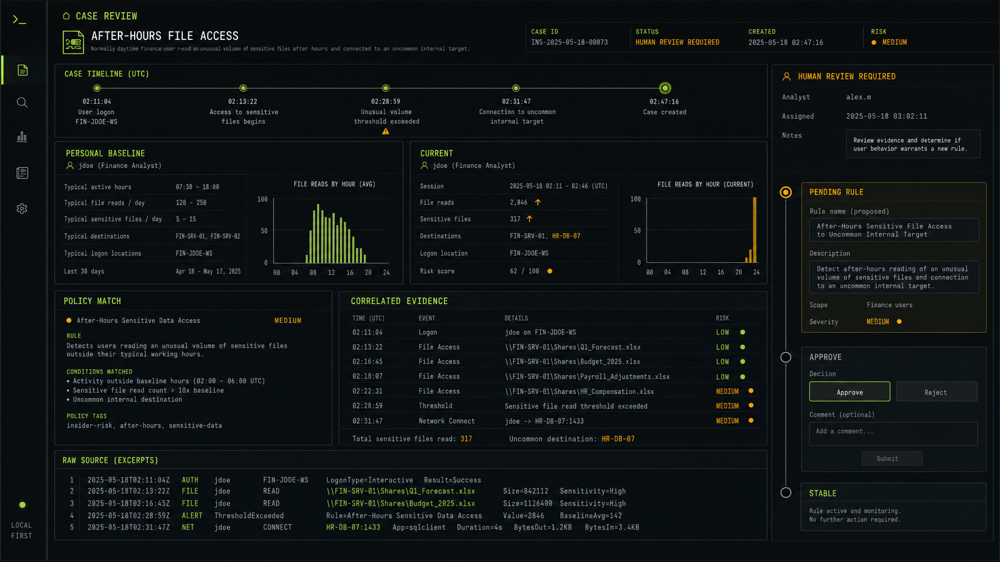
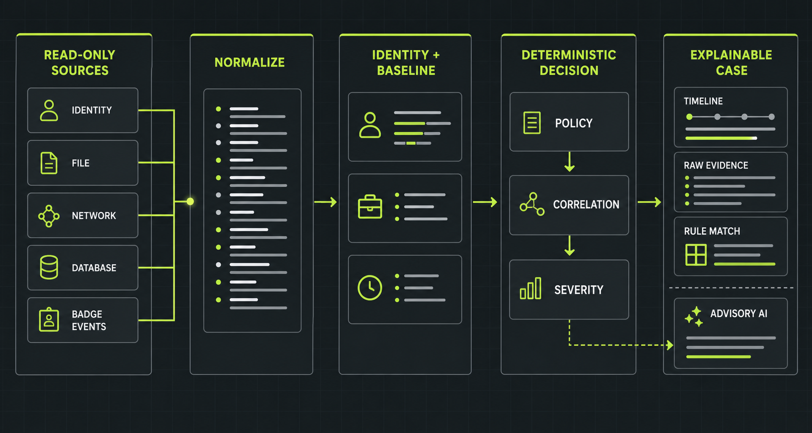
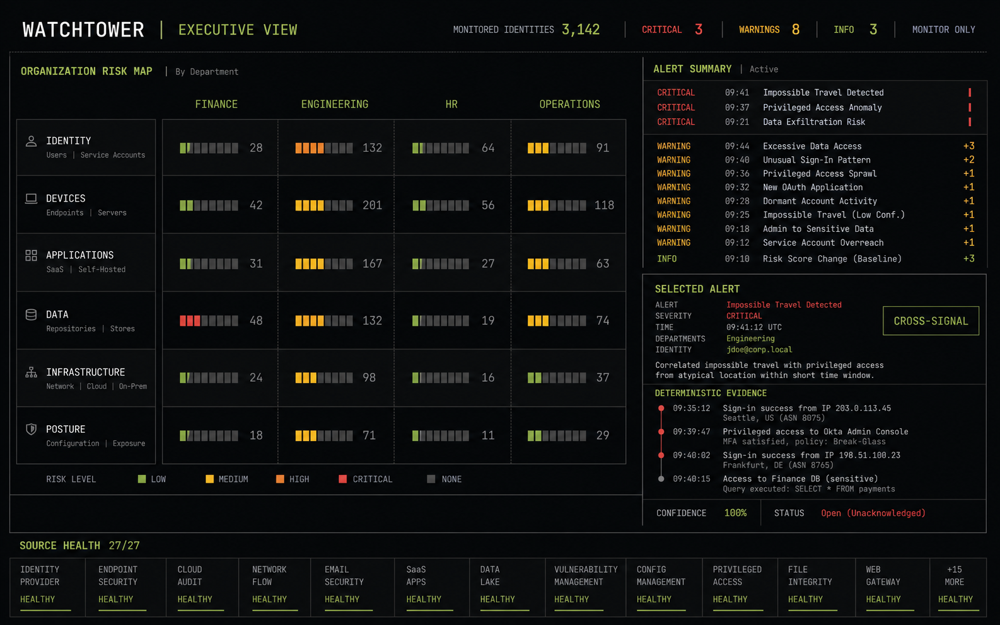
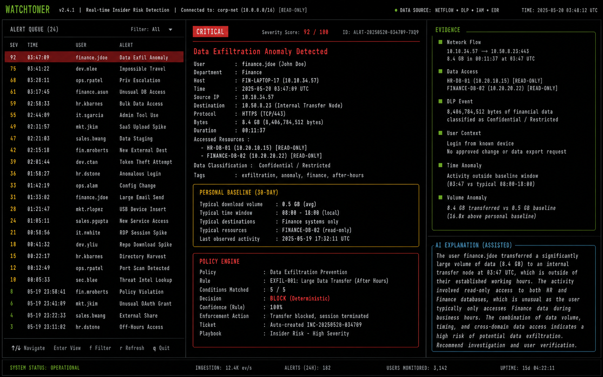

Statik eşikler
Herkese uygulanan tek eşik, normal çalışanları yanlış işaretlerken gerçek sapmaları gözden kaçırabilir.
01 / Security · UEBA · CLI-first
Kapalı şirket ağlarında kullanıcı ve servis davranışlarını öğrenir; politika ihlallerini ve anlamlı sapmaları, kararları yapay zekâya bırakmadan açıklanabilir kanıtlarla görünür hâle getirir.



01 / Problem
Şirketler çok sayıda log topluyor; ancak aynı hareketin kimin, hangi rolde, hangi saatte ve hangi kişisel normale göre gerçekleştiğini anlamak hâlâ zor. WatchTower olayları tek başına değil, davranış bağlamıyla değerlendirir.
Herkese uygulanan tek eşik, normal çalışanları yanlış işaretlerken gerçek sapmaları gözden kaçırabilir.
Kimlik, dosya, ağ, veritabanı ve fiziksel erişim kayıtları farklı sistemlerde dağınık kalır.
Bir alarmın neden üretildiği açık değilse operatörler zamanını kanıt aramakla geçirir.
02 / Fark
WatchTower’ın temel ayrımı, LLM’i karar motoru olarak kullanmamasıdır. Nihai sonuçlar test edilebilir politika, baseline, korelasyon ve önem seviyesi motorlarından çıkar.
Kullanıcı, departman, rol, varlık ve zaman penceresi için ayrı normal aralıklar oluşturur.
Her alarm hangi politika, eşik ve kanıt kombinasyonuyla üretildiğini açık biçimde gösterir.
Operatör geri bildirimi sistemi doğrudan değiştirmez; önce onay bekleyen kapsamlı bir kural üretir.
Kapalı ağlar ve hassas ortamlar için read-only connector mimarisiyle tasarlanmıştır.
03 / Yetenekler
Ürün yalnızca risk puanı göstermez; davranışın geçmişini, ilgili varlıkları, eşleşen kuralları ve incelenmesi gereken adımları tek vakada toplar.
Şirketi sessizce öğrenme, kontrollü biçimde öğrenirken izleme veya yalnızca onaylı profillerle çalışma modları.
Kişisel, departman, rol, varlık ve zaman bazlı eşiklerle aynı hareketi doğru bağlamda yorumlama.
Login, dosya, ağ, mail, veritabanı, badge ve HR sinyallerini ortak bir olay zincirinde birleştirme.
Alarm zaman çizelgesi, kaynak loglar, rule match’leri ve advisory AI açıklamasıyla eksiksiz kanıt paketi.
Wazuh, Elasticsearch, dosya logları ve kurumsal kaynaklardan sistemi değiştirmeden veri toplama.
False positive geri bildirimini audit trail taşıyan pending rule → approve → stable akışına dönüştürme.

04 / Akış
Her aday olay aynı izlenebilir karar hattından geçer. LLM yalnızca karar verildikten sonra açıklama ve operatör desteği için devreye girer.

05 / Ürün ekranları
Özet risk görünümünden tek bir kullanıcının baseline profiline, oradan kanıt zincirine kadar tüm inceleme CLI içinde ilerler.

Organization risk map
Alert console06 / Teknik yaklaşım
Connector’lardan karar graph’ına kadar her katman ayrı test edilebilir, provider bağımsız ve audit edilebilir olacak şekilde tasarlanmıştır.
LangGraph akışı yönetir; karar matematiği bağımsız Python servislerinde kalır. LLM erişilemez olsa bile detection devam eder.
07 / Demo
Kapalı ağ senaryosu, baseline öğrenme akışı ve açıklanabilir vaka incelemesini birlikte değerlendirmek için demo erişimi isteyebilirsiniz.